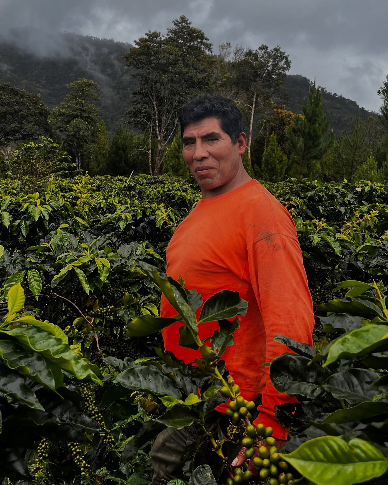

De La Cruz
El hombre
detrás del
grano perfecto
En Los Mellizos, Villa Rica, Sabino De La Cruz y su esposa Paulina Montoya iniciaron en 2021 un proyecto familiar: "De La Cruz Café". Sabino lleva más de 20 años dedicado al cultivo responsable del café en esta zona de Oxapampa.
La idea nació en un momento difícil: la roya amarilla golpeó buena parte de las parcelas de café de la región y los precios tampoco ayudaban. En lugar de rendirse, la familia decidió aprovechar al máximo las variedades que ya tenían sembradas —Caturra, Típica y Catuaí— y así nació el blend que hoy los caracteriza.
Cada lote pasa por un lavado cuidadoso: 48 horas de fermentación en fruta y 36 horas más ya despulpado, seguidas de 7 días de secado solar en invernadero. El resultado es una taza limpia, con aroma a frutos secos y fondo a chocolate y canela.